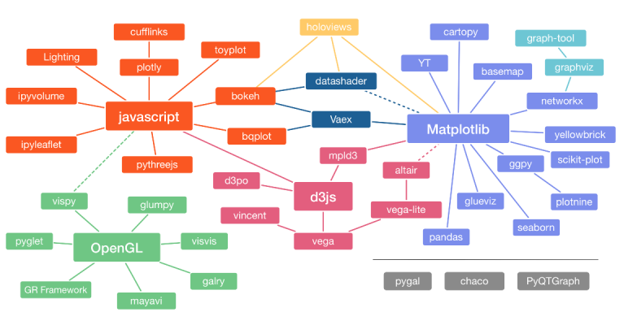
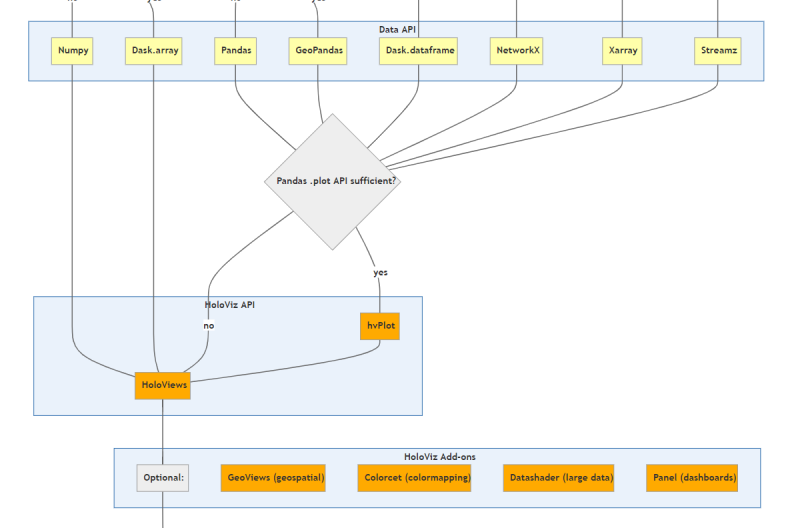

Python 可视化库盘点
Contents
Python 可视化库盘点#

随着数据科学的繁荣，各种 Python 的可视化库相继涌现，公众号和论坛上也有各种各样的推荐，选择哪个可视化库也是很多时候让人头疼的问题。
这里，为自己曾经的踩坑经历做一下梳理。
1. Matplotlib#
Matplotlib 是 Python 的默认可视化库，拥有最丰富的生态，其重要衍生库如下
Matplotlib (⭐13.4k)
Seaborn (⭐8.3k)
PlotNine (⭐2.6k)
Yellowbrick (⭐3.1k)
CartoPy (⭐0.8k)
WordCloud (⭐8k)
Seaborn 兴起于 Kaggle，其采用图形语法，加上漂亮的配色，被认为是数据分析的首选工具。在拓展 Matplotlib 的同时，保持了其灵活性。PlotNine 同样使用图形语法，是 ggplot2 的 Python 克隆，非常适合 R 转 Py 的人。相比于 Seaborn，一些时候，PlotNine 的绘图更加方便，但是返回的是 figure 对象，在绘制子图和调整细节的时候，会非常不灵活。
Yellowbrick 是服务 Scikit-Learn 的可视化库，不过随着后者和 Pandas 也逐渐有了原生的可视化模块，这个曾经风靡一时的仓库可能会逐渐淡出视野。
CartoPy 几乎是地理和气象分析的必须了解的可视化库。WordCloud 字如其名，用于生成词云。
此外，也是 SciPy 生态的默认绘图后端，使用 Matplotlib 的主流计算库包括
Pandas
SciPy
StatsModels
Scikit-Learn
NetWorkX
Matplotlib 有着非常优秀的底层设计，可以用于大地理、大气、天文、声音等各种数据的可视化，其中不少对于基于数据框的可视化库，如 ggplot2 来说会相当麻烦。然而，由于创始人 John Hunter 英年早逝（40 余岁），其开发经历过一段群龙无首的时期，留下了一堆混乱的 API。不过最近两年，获得了充足经费支持的 Matplotlib，已经开始重新整理规范了开发，有了更加灵活的布局方法。
2. HoloViz#
HoloViz 是 Anaconda 资助的可视化项目。形成了以 Bokeh 为中心和底层，以 HoloViews 和 Panel 为主打产品的 Python 第二大可视化生态系统。
Bokeh 虽然写起来稍显繁琐手，但是部署却十分方便，可以相对丝滑地与 Python 其他库做整合，作为 Pandas 等默认后端时，调用和 Matplotlib 一样方便。如今，随着 Anaconda 的持续投入，Bokeh 已经成了 Python 社区里默认的交互绘图后端。毕竟爸爸的钱不是白给的。
Bokeh (⭐14.9k)
Holoviews (⭐1.8k)
Geoviews (⭐0.3k)
hvPlot (⭐0.3k)
DataShader (⭐2.5k)
Panel (⭐0.9k)

Panel 是 HoloViz 的仪表盘，是目前个人认为最容易上手的仪表盘，官网上有不少案例可供参考。
3. Plotly#
Plot.ly 是一家位于蒙特利尔的数据可视化商业公司。其可视化库 Plotly 借鉴了大名鼎鼎的 D3.JS，在各种交互可视化库还不那么成熟的几年前，凭借着其灵活性，一跃成为网红。与之配套的 Dash，也是 Python 社区里第一个成熟的仪表盘工具。
Plotly (⭐9.2k)
Plotly_Express (⭐0.6k)
Dash (⭐14.2k)
Plotly 虽然灵活，但是语法并不简洁，实现同样的效果需要写不少代码。Plotly_Express 相当于 Plotly 的 Seaborn。目前，Plotly 易于部署的特性，已被 Bokeh、Altair 等同类型可视化库追平，仪表盘 Dash 由于不少功能还要写 JS 实现，也不再被认为是首选。
4. Altair-Viz#
Altair 是 JS 可视化库 Vega-Lite 的 Python 封装。
Altair 有着非常优雅的语法，然而，由于其基于的 Vega-Lite 又继承于 Vega，故 Altair 的改进和迭代严重依赖于上游，从 4.0 以后迭代缓慢。
Altair (⭐6.5k)
Streamlit (⭐14k)
以 Altair 为默认后端的 Streamlit 由于可以使用纯 Python 完成整个工程，在社区里迅速爆红。知乎以及公众号都有报道。
5. 生态支持#
5.1. 仪表盘#
仪表盘（Dashboard）是各个交互可视化库的最重要的应用场景。可以看出，Dash 作为曾经一枝独秀的王者，热度上已经基本被 Streamlit 追平。
Panel |
Streamlit |
Dash |
|
|---|---|---|---|
Stars ⭐ |
0.9k |
14k |
14.2k |
Matplotlib |
✓ |
✓ |
|
Bokeh |
默认 |
✓ |
|
Altair |
✓ |
默认 |
|
Plotly |
✓ |
✓ |
默认 |
5.2. 数据框#
探索性数据分析（EDA），是数据分析自动化的重要组成部分，近两年的社区里出现了多个 EDA 工具，各有受众。
Pandas 整合 |
EDA 工具 |
|
|---|---|---|
Matplotlib |
默认后端 |
Pandas-Profiling |
Bokeh |
✓ |
DataPrep |
Altair |
+ pdVega |
Lux-API |
Plotly |
+ cufflinks |
SweetViz |
6. 其他#
还有一些较为流行，但不属于上述生态的可视化库，因为没有形成生态，而且我本人没有亲自试用过（PyEcharts 除外），这里就不再评价了。
PyEcharts (⭐10.8k)
VisPy (⭐2.6k)
PyGAL (⭐2.3k)